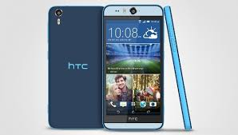

Boyut: 145,9 x 71,9 x 3,0 – 9,0 mm
Aðýrlýk: 161 gram
Ekran: 5.2 inç, Quad HD ekran, Super LCD 5, Gorilla Glass 4, 570 ppi
Ýþlemci: 2.2 GHz hýzýnda çalýþan Snapdragon 820 iþlemci
Grafik Birimi: Adreno 530 GPU
RAM: 4 GB RAM
Depolama: 32 GB/64 GB depolama alaný, 2 TB’a kadar microSD destekli
Arka Kamera: 12 Megapiksel Ultrapixel 2, çift LED flaþ, OIS, lazer otofokus
Ön Kamera: OIS özellikli 5 Megapiksel Ultrapixel
Pil: 3000mAh
Renk seçenekleri: Karbon Gri, Buzul Gümüþ, Topaz Altýn, Camellia Kýrmýzý
Ýþletim Sistemi: Android 6.0 Marshmallow, Sense 8.0
Baðlantý: 802.11 a, b, g, n, ac, Bluetooth 4.2, NFC, USB 3.1, 1. Nesil USB Type-C, LTE Cat.9